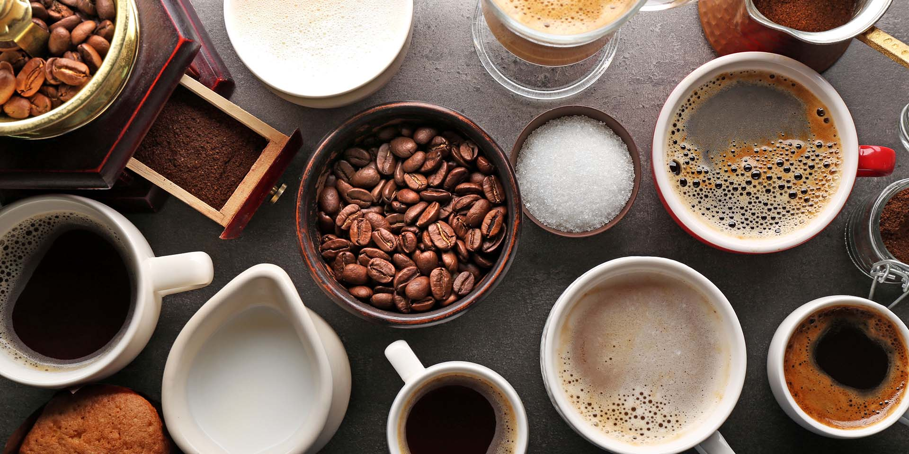
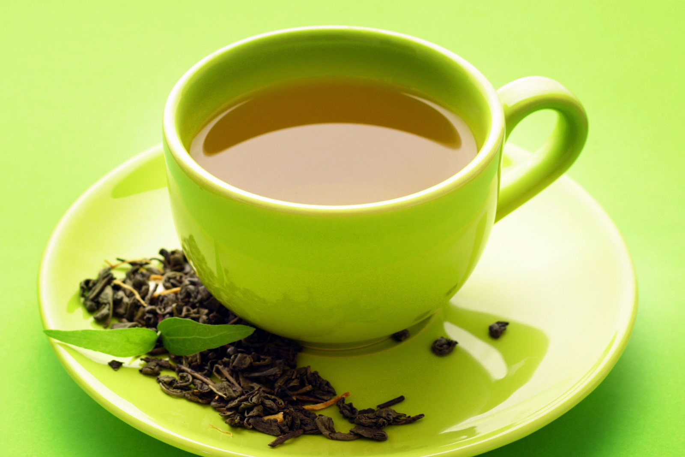

Welcome to the Coffee Shop
Coffee
Coffee is a brewed drink prepared from roasted coffee beans, which are the seeds of berries from the Coffea plant. Coffee plants are now cultivated in over 70 countries, primarily in equatorial regions of the Americas, Southeast Asia, India, and Africa. Once ripe, coffee berries are picked, processed, dried, roasted, ground, and brewed with near-boiling water to produce coffee as a beverage.

Tea
Tea is an aromatic beverage made by pouring hot water over cured or fresh leaves. Green tea, black tea, oolong tea, and white tea are processed differently, creating distinct colors and flavors. Tea can be served hot or cold and is often combined with milk, fruit, herbs, or sugar.
